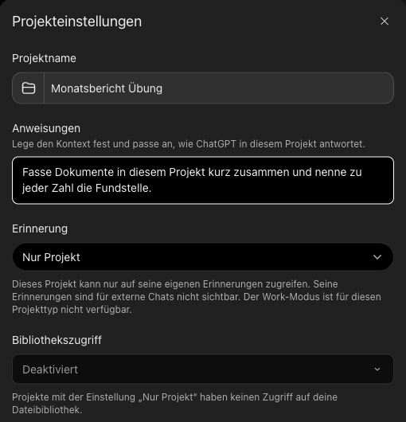
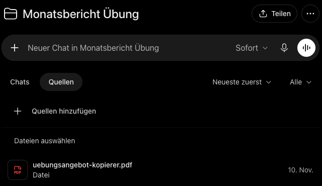
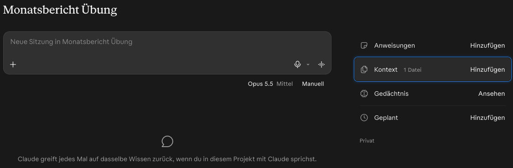

Ein Projekt für wiederkehrende Aufgaben
Danach kannst du für eine Aufgabe, die immer wiederkommt, ein Projekt mit eigener Anweisung und eigenen Dateien anlegen, und weißt, wann ein neuer Chat besser ist.
Etappe 4 · Ein Gedächtnis geben- 1Eine Daueranweisung geben
- 2Ein Projekt für wiederkehrende Aufgaben
- 3Vorlagen ablegen und Regeln fürs Team
Was in ein Projekt gehört
- Im JobNur mit dem Konto, das deine Firma bereitstellt, und nur, wenn sie das Werkzeug freigegeben hat. Ein Gratiskonto, das du mit deiner Firmenadresse anlegst, zählt nicht: Das ist ein Privatkonto. Welches Konto und welche Werkzeuge freigegeben sind, sagt dir die IT oder das Intranet. Im Zweifel nichts Echtes hochladen, sondern beschreiben.
- Privat, VereinNichts mit Namen, Adressen, Kontonummern oder Gesundheitsdaten. Steht so etwas drin, tipp den Text lieber ab und lass es weg, oder ersetz es durch XXX. Ersetz auch Umstände, an denen man die Person erkennt, etwa eine seltene Funktion oder ein Datum.
- Zum ÜbenEine erfundene oder geschwärzte Datei, etwa das Kopierer-Angebot aus Etappe 2.
1Ein Beispiel
Thomas schreibt jeden Monat einen Bericht über die Rückmeldungen im Kundenservice. (Erfunden.) Er arbeitet dafür im Arbeitskonto, in Microsoft 365 Copilot, den seine Firma freigegeben hat, und legt dort ein Notebook an, einen solchen Arbeitsbereich:
- Anweisung
- Fasse die Rückmeldungen eines Monats zusammen: die drei häufigsten Themen, je mit Anzahl und einem Beispiel ohne Namen. Höchstens eine Seite.
- Dateien
- Die Berichtsvorlage und der Bericht vom Vormonat, beide ohne Kundennamen.
- Chats
- Für jeden Monat ein neuer Chat. Hinein kommen nur Thema und Datum je Rückmeldung, ohne Namen, Kundennummern und Adressen.
Jeden Monat gibt Thomas nur noch die neue Liste hinein. Prüfen muss er trotzdem: Stimmen die Anzahlen mit seiner Liste?
Wann sich ein Projekt lohnt
| Projekt | Neuer Chat |
|---|---|
| Die Aufgabe kommt immer wieder. | Eine einmalige Frage. |
| Es sind immer dieselben Unterlagen. | Das Thema wechselt. |
| Die Anweisung bleibt gleich. | Alte Dateien würden die Antwort verfälschen. |
| Du willst morgen daran weiterarbeiten. | Gegenlesen: dann ein temporärer Chat, wie in Etappe 3. |
Faustregel: Ab dem dritten Mal lohnt sich ein Projekt.
2Selbst ausprobieren
Nimm eine Aufgabe, die bei dir regelmäßig wiederkommt.
- Projekt anlegen mit klarem Namen, siehe Reiter.
- Anweisung eintragen. Kopier die Vorlage und füll sie aus.
- Eine Datei hineinlegen, erfunden oder geschwärzt, etwa das Kopierer-Angebot aus Etappe 2.
- Im Projekt fragen, ohne die Anweisung zu wiederholen.
Dieses Projekt ist für: [die wiederkehrende Aufgabe]. Das Ergebnis soll so aussehen: [Format, Länge]. Nutze nur die Dateien in diesem Projekt. Nenn bei jeder Angabe Datei und Fundstelle. Fehlt etwas, schreib „steht nicht drin“.
Wähle dein Werkzeug: Tippe auf den Namen, den du benutzt. Die Anleitung darunter wechselt.
In der Seitenleiste legst du unter „Projekte“ ein neues Projekt an, trägst Anweisungen ein und fügst Dateien hinzu. Chats im Projekt sehen beides. Stellst du unter „Erinnerung“ „Nur Projekt“ ein, bleibt, was ChatGPT sich im Projekt merkt, im Projekt. Nach unserem Kenntnisstand gibt es Projekte auch im kostenlosen ChatGPT. Fehlen sie, nimm eine Notiz mit der Anweisung und häng die Datei jedes Mal neu an.


Im Firmen-Copilot (Microsoft 365 Copilot) heißen Arbeitsbereiche dieser Art „Notebooks“: Dort sammelst du Dateien und Notizen zu einem Thema und fragst dazu. Gibt es kein Feld für die Anweisung, leg sie als Notiz ins Notebook.
Auch der private Copilot zeigt in der Seitenleiste „Notizbücher“, im kostenlosen Konto. Hineingeschaut haben wir noch nicht.

Bei Gemini gibt es „Gems“: Helfer mit eigener Anweisung und Dateien. Anders als in einem Projekt steht dort jeder Chat für sich.

Bei Claude heißen sie ebenfalls „Projekte“. Rechts am Projekt trägst du unter „Anweisungen“ die Anweisung ein und legst unter „Kontext“ Dateien ab. Jeder Chat im Projekt sieht beides. Das Projekt hat außerdem ein eigenes Gedächtnis. Im kostenlosen Konto gehen laut Anthropic bis zu fünf Projekte. Hilfeseite bei Anthropic

Stand: November 2026. Projekte in ChatGPT und Claude haben wir selbst angelegt, mit bezahlten Konten. Was davon im kostenlosen Tarif geht und die übrigen Menüpfade haben wir nicht nachgeprüft.
Eine Antwort, die deiner Projekt-Anweisung folgt und Datei und Fundstelle nennt, obwohl du nur kurz gefragt hast. Fehlt die Fundstelle, prüf zuerst, ob die Anweisung im Projekt gespeichert ist. Steht sie dort, frag nach: Die KI hält sich nicht immer an Anweisungen.
3Prüfen: drei Handgriffe
Die drei Handgriffe bleiben, im Wortlaut in Etappe 3, Einheit 1. Bei Projekten achtest du zusätzlich auf:
- Welche Datei?Lass dir zu jeder Angabe die Datei nennen, es liegen oft mehrere darin.
- AufräumenNimm Dateien heraus, die nicht mehr gelten, etwa den Bericht vom Vorjahr.
4Selbstcheck
Du willst einmal wissen, wie man einen Serienbrief anlegt. Projekt oder neuer Chat?
Neuer Chat. Die Frage kommt nicht wieder, und es gibt keine Unterlagen dazu.
Darf die Liste mit echten Kundennamen in dein privates Projekt?
Nein. Kundendaten gehören nur in Werkzeuge, die deine Firma freigegeben hat. Für die Übung nimm Erfundenes oder Geschwärztes.
Aus Einheit 1: Was ist der Unterschied zwischen Daueranweisung und Projekt-Anweisung?
Die Daueranweisung gilt in jedem Chat, die Projekt-Anweisung nur im Projekt. Widersprechen sie sich, gilt meist die des Projekts (nicht selbst nachgeprüft).